Two knights of each element will guard a broken portal in that element's biomes in the Overworld (the user's plan). Ice already has its pair, the Thawed Soldiers (9C and 9D, the Rimefall gallery); poison has Sir Mildew (No. 13, the Blightwood gallery). These are the candidates to pick the other pairs from: three more poison knights and four each for fire, thunder and earth (November 7, 2026). Looks only. In the game: /dross showcase knights.
Three more Blightwood knights in Sir Mildew's style (No. 13 of the Blightwood candidates is the first), each with a weapon of its own, poison-themed (the user: 'maybe a staff').
Sir Mildew's sworn brother, who took up the staff when his sword rusted away: the same plate armour furred with mould, a tall pointed helm with a curtain of rotten mail and Blightcaps sprouting from its sides, a cape eaten to rags. His staff of black, twisted wood is crowned with an iron cage round a glass globe of glowing poison that drips and hisses; his left hand drips with it too. He's the one who poisons the ground round the broken portal.
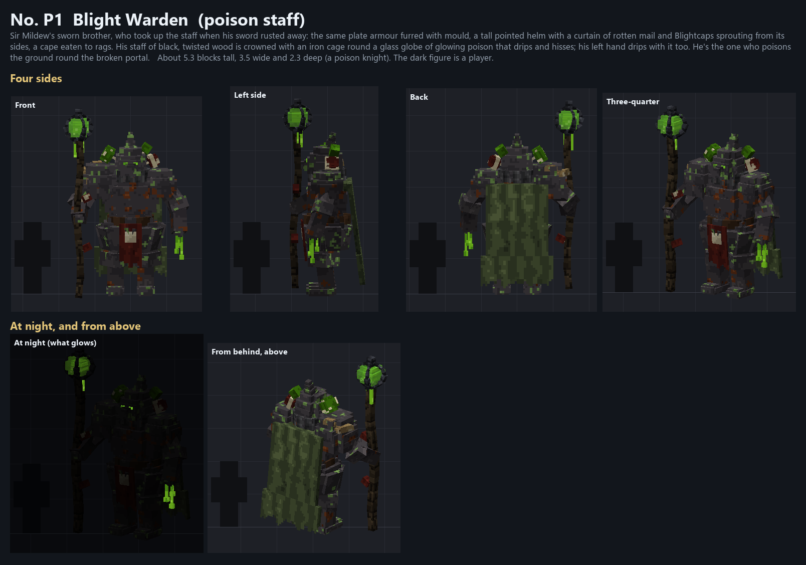
The one who announces the plague: a knight in a long leather coat over his mail and a breastplate gone green, his helm drawn out into a long iron beak like a plague doctor's mask, two round lenses glowing poison green. He swings a censer on a chain from a short haft, and the poison smoke it breathes hangs round the broken portal; his shield of rotten planks bears a skull with a Blightcap growing from it.
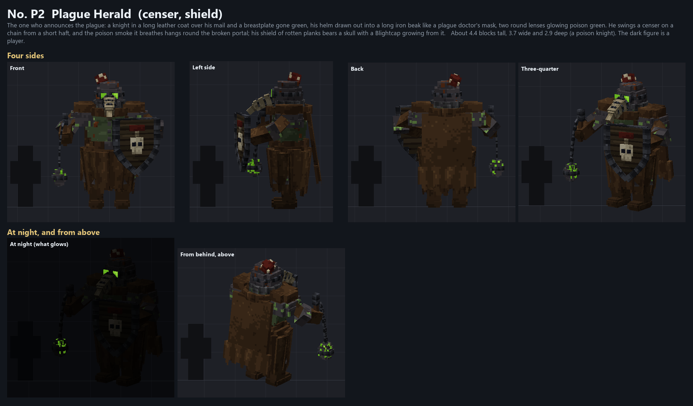
What's left of a knight the Blight took for its own: a great Blightcap has grown out of his back, its stem arching over his shoulders so its rotten red cap hangs over his helm like a hood. Mycelium threads glow between his plates, his barbute has split open and spores glow inside it, and he carries a rusted war scythe with bracket fungi along its blade. He doesn't speak; the mushroom breathes for him.

Four fire knights of the Fire Necromancer: blackened iron and obsidian split by glowing lava.
The Fire Necromancer's champion, the one who stands in front of the broken portal: plate armour of iron blackened in the fire, cracked right through so the lava inside him shows in every seam, a great helm with obsidian bull horns and a slit of fire for eyes, a crimson cape burning along its hem. Both hands rest on the pommel of a wavy flamberge planted in the sand, its blade cooled black over a core that's still molten. He waits for you to step into the ring of scorched ground round the portal.
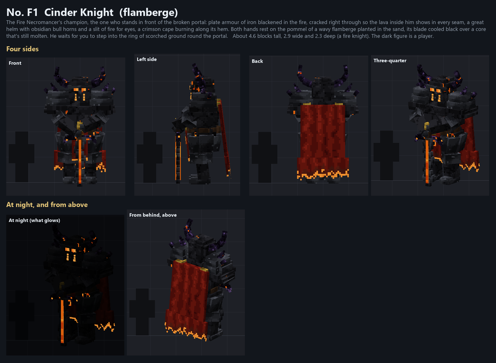
A sworn guardian of the fire, a templar who keeps the broken portal like a shrine: blackened plate trimmed with brass, a crimson surcoat, a helm with a crest of living flame running from brow to nape, a flanged mace whose head glows like a coal, and a heater shield bearing a burning sun. When you come near he raises the shield and the sun on it flares.
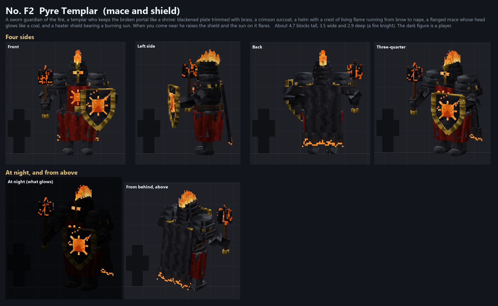
A knight of the burning sands: brass scale mail over a long coat the colour of the desert, a spiked helm wrapped in cloth with a veil over his face so only his glowing eyes show, a sash of crimson. He holds a tall halberd with an obsidian blade and a spike whose tip never stops burning, and in his open left hand a flame floats, ready to be thrown. He keeps the portal's far side, where the sand has turned to glass.
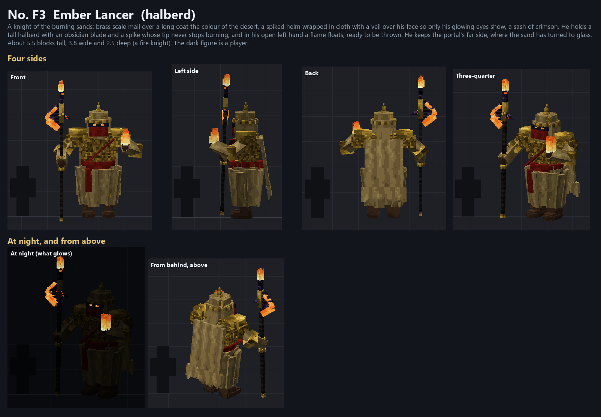
The biggest of the fire knights, more forge than man: his greaves and pauldrons are firebrick laid round him like a kiln, the mortar glowing; his breastplate is a furnace door with the fire roaring behind its grate; his helm is a squat stack with two chimneys smoking at the back and a grille of fire for a face. On his shoulder rests a maul of basalt cracked with lava. When he swings it the furnace in his chest flares.
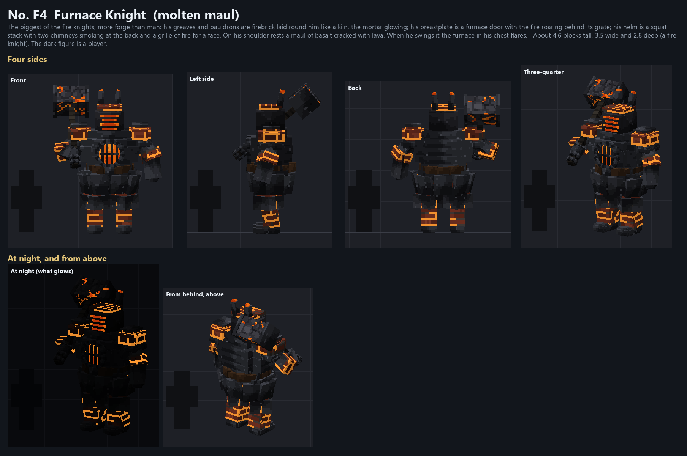
Four thunder knights of the Storm King: copper gone green, storm-grey cloth, the sea, and lightning crackling pale yellow.
The Storm King's sentinel on the shore: plate armour of copper gone green with the sea air, a great helm crowned with a tall lightning rod and two smaller ones on his shoulders, so every storm finds him first; the strikes he has drunk crackle pale yellow along the seams of his armour and through his visor. He leans on a copper war hammer planted head-down in the sand, and when thunder rolls over the broken portal he lifts it.
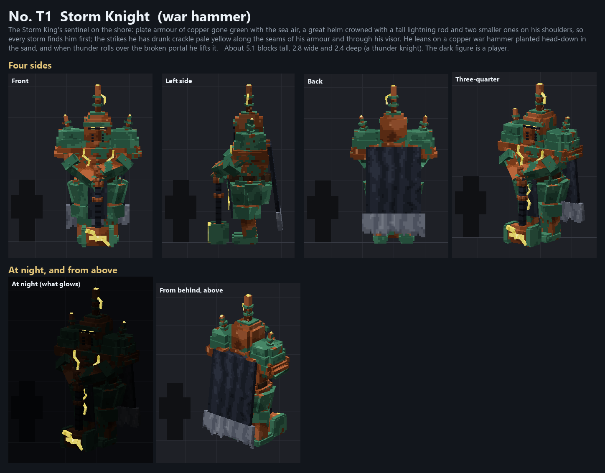
A knight of the drowned coast who came back up with the storm: copper scale mail crusted with barnacles and hung with kelp, a helm with a great fin down its crest and gill-plates at its cheeks, glowing eyes. Lightning jumps between the three prongs of his copper trident, and his shield is a sea turtle's shell rimmed with copper, a bolt of lightning set into it. He guards the portals where the shore meets the sea.
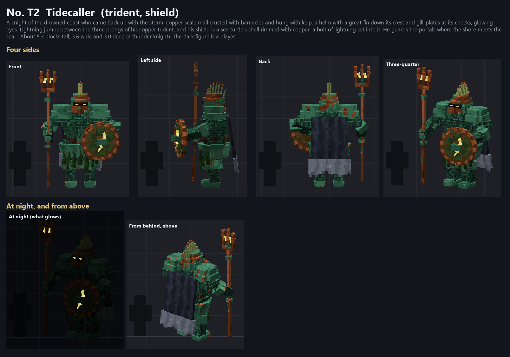
He walked out of the sea after the storm that sank his ship: heavy riveted copper armour wrapped in rope and crusted with barnacles, two copper air tanks on his back, and a great round diving helm whose porthole glows with the lightning trapped inside it. He carries the wreck's anchor on his shoulder like a hammer, its chain wound round his arm, and swings it at anyone who comes near the portal.
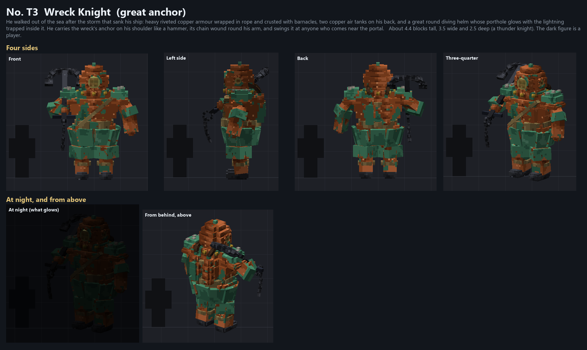
The Storm King's battle-mage: lighter copper armour under a long storm-grey coat, a mantle round his shoulders like a thundercloud about to break, a helm crowned with jagged copper bolts. His staff is a tall copper rod wound with coils, a ball of lightning caged at its top, and another crackles in his raised left hand; he throws them from behind his partner, and every strike he calls leaves a scorch of glass in the sand.
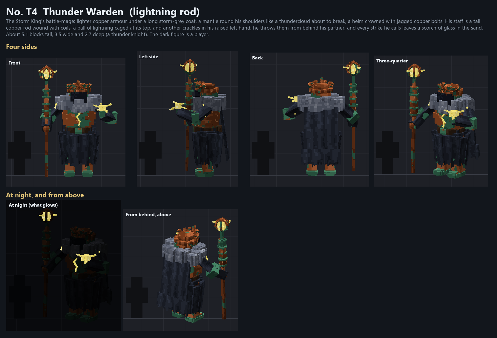
Four earth knights of the Earth General: carved stone and deepslate split by amber light, moss, crystal and goat horn.
A knight carved rather than forged, the Earth General's oldest guard: his armour is slabs of stone fitted together like a wall, the amber light of the earth's heart glowing in every crack, moss grown thick on his shoulders from standing still so long. His helm is a block of stone with a face carved into it and two eyes of amber light. He rests both hands on a maul whose head is a banded cube of deepslate with an amber crystal set in it, and the ground shakes when he lifts it.
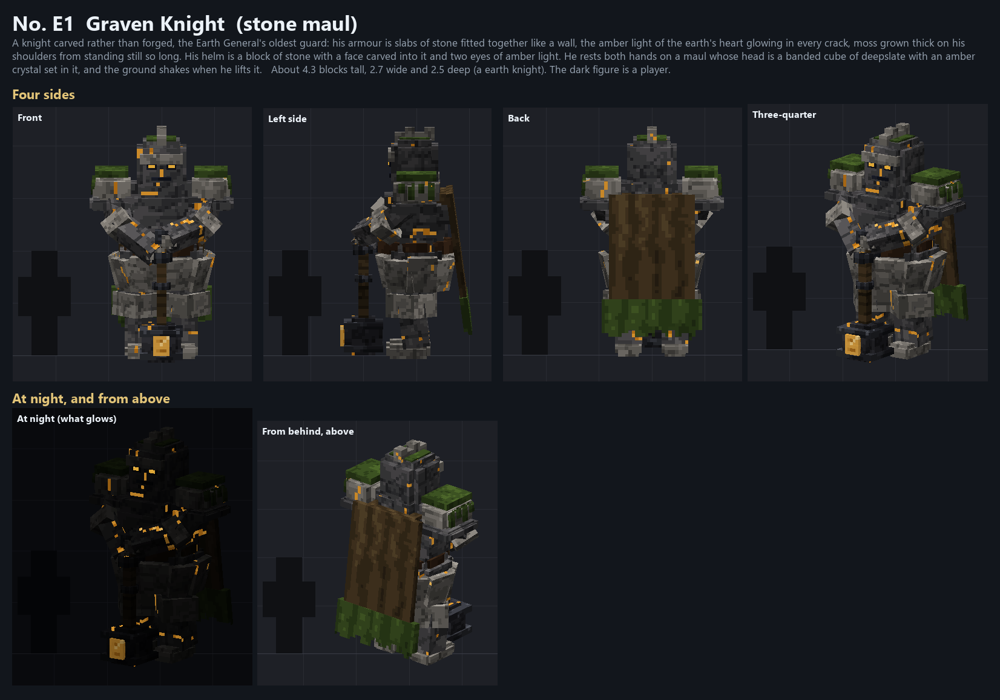
The wall in front of the broken portal: a knight of the high crags in deepslate and iron, a mountain goat's great horns curling from his helm, a mantle of goat fur. His shield is a standing stone as tall as his chest, a rune of amber light carved into it, and over its rim he levels a spear whose head is a single shard of amethyst. He doesn't chase you; he just never lets you past.
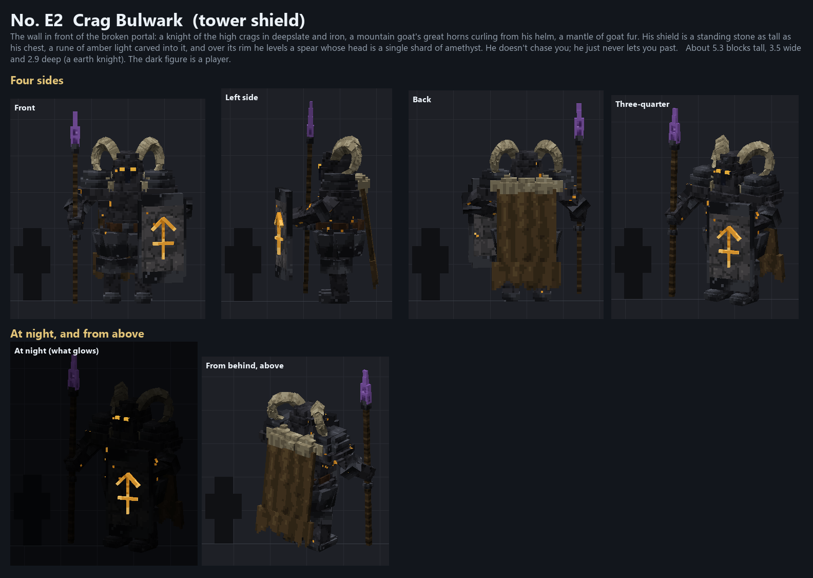
A miner of the deep roots who dug too far and came back up changed: amethyst has grown right through his dark armour, clusters of glowing crystal breaking out of his shoulders, back and helm like a geode cracked open. He carries a war pick over his shoulder, its iron head tipped with a spike of amethyst, and the crystals on him ring when he swings it.
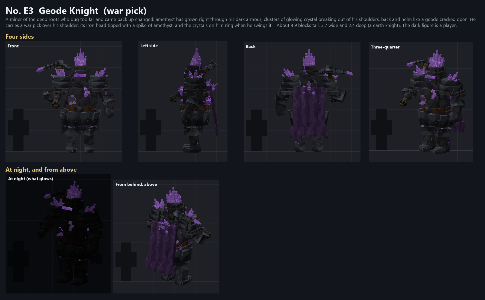
A knight of the green hills, the Earth General's thrower: rough unhewn stone armour grown over with moss, meadow flowers sprouting from its cracks, a mane of moss down the back of his helm. He needs no weapon: he holds a mossy boulder high over his head in both hands, and the first thing anyone near the broken portal knows of him is the boulder landing.